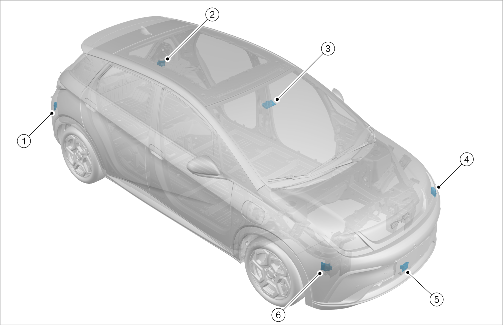
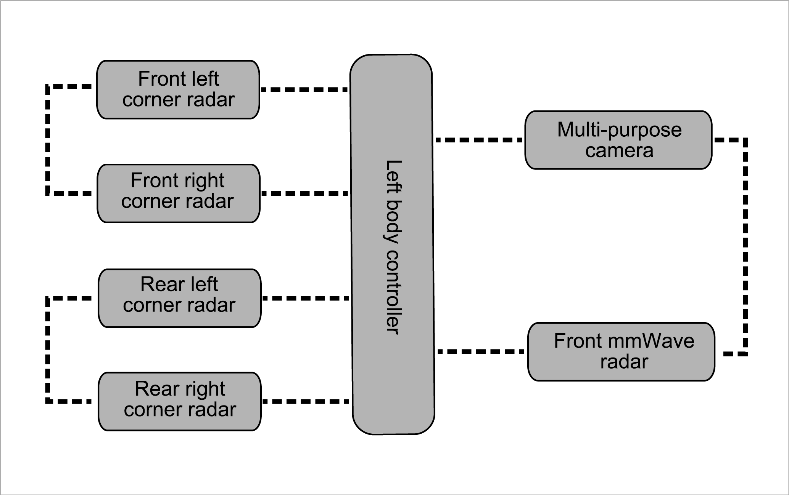

Based on conventional cruise control, the adaptive cruise control (ACC) is designed to actively control the vehicle speed for auto follow-up while cruising. This is done via a front mmWave radar and a multi-purpose camera which detect the vehicle's distance and speed relative to the vehicle ahead. The ACC system can automatically switch between fixed-speed cruise and follow-up cruise depending on whether there is a vehicle ahead.
The intelligent cruise control (ICC) incorporates adaptive cruise control (ACC) and lane centering control (LCC). It provides the driver with longitudinal and lateral auxiliary control within the speed range of 0 to 125 km/h, reduces the driving burden of the driver and provides a safe and comfortable driving environment.
The predictive collision warning (PCW) system and autonomous emergency braking (AEB) system use the front mmWave radar and multi-purpose camera to detect vehicles and pedestrians ahead. Once a collision risk is detected, the system emits audible and visual alarms to urge the driver to take avoidance measures, while also increasing the potential braking pressure to provide sufficient reaction time for the driver. If the system determines that the possibility of collision continues to increase, it automatically engages the brake to assist the driver in avoiding or mitigating the collision impact.
The Front Cross Traffic Alert/Brake (FCTA/FCTB) detects vehicles crossing in front of the vehicle through front mmWave radars on the left and right sides of the vehicle's front bumper to remind the driver and automatically brake the vehicle if necessary. When the vehicle is running at a low speed and FCTA/FCTB detects that there is a risk of collision with the front crossing vehicle, the system will remind the driver in visual and audible form. When a collision is about to occur, the vehicle will stop automatically to avoid collision.
The high beam assist (HMA) judges the current driving environment through a multi-purpose camera sensor, and automatically activates or deactivates the high beam within the speed range of 35 to 145 km/h.
The lane departure warning (LDW) system detects lane lines ahead through a multi-purpose camera. When the vehicle speed is 60 to 150 km/h and the driver unintentionally drifts out of the lane, the LDW system will warn the driver by steering wheel vibration, audible alarm and/or instrument display. The lane departure prevention (LDP) system detects lane lines ahead through a multi-purpose camera. When the vehicle speed is 60 to 150 km/h and the driver unintentionally drifts out of the lane towards the line, the LDP system activates and turns the steering wheel gently by providing reverse torque through the electric power steering (EPS) system, to prevent the vehicle from moving out of its lane. When the LDP system is activated, an alarm will be given at the same time to prompt the driver to take over the steering wheel to control the steering. The alarm lasts until the LDP deactivates and can be given in an acoustic or optical manner and through steering wheel vibration. If the system is activated twice or more within a continuous period of 180 seconds and the driver does not turn the steering wheel during activation, the system will send an alarm in the second activation or any further intervention. From the third intervention (and subsequent interventions), the alarm duration will be at least 15 seconds longer than that of the previous alarm.
The emergency lane keeping assist (ELKA) system detects the lane lines ahead through a multi-purpose camera and detects the vehicles on the adjacent lane approaching from behind through a rear corner front mmWave radar. It works at vehicle speeds of 60 to 150 km/h when the driver unconsciously deviates from the lane or begins to change lanes. If another vehicle in an adjacent lane enters into a blind spot from the rear, and the system judges that it poses a collision risk, it will activate and control the electronic steering system (EPS) to provide reverse torque, keeping the vehicle in the current lane.
The blind spot assist system includes blind spot detection (BSD), lane change warning (LCW), rear cross traffic alert (RCTA), rear cross traffic brake (RCTB), rear collision warning (RCW) and door open warning (DOW). The system detects the environment behind the vehicle through rear corner mmWave radars on the left and right sides of the vehicle's rear bumper, to timely remind the driver to drive carefully and pay attention to driving safety.
The traffic sign recognition (TSR) system recognizes speed limit signs through the multi-purpose camera. It displays relevant speed limit signs of the current road on the instrument and sends alarms when the vehicle speed exceeds the detected speed limit.
The intelligent speed limit control (ISLC) system incorporates the adaptive cruise control (ACC) and traffic sign recognition (TSR) functions. After the system is activated, when a speed limit sign is identified and the vehicle is speeding, the system will issue a prompt to ask whether to adjust the ACC cruise speed to the recognized speed limit value. After receiving confirmation from the driver, the system will automatically set the ACC cruise speed to the recognized speed limit value, so that the vehicle will not overspeed.

|
S/N |
Name |
S/N |
Name |
|---|---|---|---|
|
1 |
Rear right corner mmWave radar |
4 |
Front left corner mmWave radar |
|
2 |
Rear left corner mmWave radar |
5 |
Front mmWave radar |
|
3 |
Multi-purpose camera assembly |
6 |
Front right corner mmWave radar |
